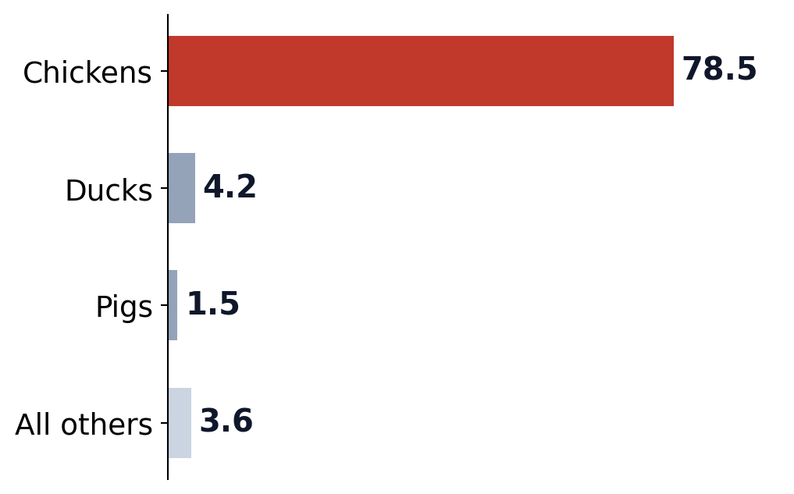

Lecture 12 — Animal Ethics
Part B: Industrial Animals, Xenotransplantation, and the Frontier
What That Number Looks Like

Socially Responsible Agricultural Project, via Wikimedia Commons. CC BY 4.0.

Inside a hog barn, Lyons, Georgia. Jeff Vanuga, USDA NRCS. Public domain.
Most live in CAFOs (concentrated animal feeding operations): crowded indoor barns they never leave.
It Harms Humans Too: Antibiotics
- About two-thirds of medically important antibiotics sold in the U.S. go to food animals (Patel et al. 2020), and sales rose 16% in 2024 (FDA 2025).
- Routine use breeds antibiotic resistance: bacteria that survive the drugs reach people through food, water, and farm workers.
- Resistant infections already contribute to about 4.7 million deaths a year; one forecast projects 8.2 million by 2050 (GBD AMR Collaborators 2024).

It Harms Humans Too: Pandemics
- Crowding genetically similar animals together is ideal for breeding new viruses. Avian and swine influenza strains have jumped from farms to people.
- Many experts count industrial animal agriculture and the wildlife trade among the century’s leading pandemic risks.
- A rare convergence. Kant and Cohen grant animals no rights, yet their human-centered view still condemns this system.

The Cases So Far

In 2025 the FDA cleared the first formal trials: an equipoise problem, not just a rescue. And two patients, including Tim Andrews, used a pig kidney as a bridge to a human one (eGenesis 2026).
Thought Question
A lab proposes engineering mice with substantially human-like memory and problem-solving, to make Alzheimer’s research more accurate.
- Does making the mouse smarter make it more wrong to experiment on, even though the point was better research?
- Could it ever be kinder to refuse: not to create a being whose new capacities only deepen its suffering in a cage?

A gene-knockout mouse beside an ordinary one. Maggie Bartlett, NHGRI. Public domain.